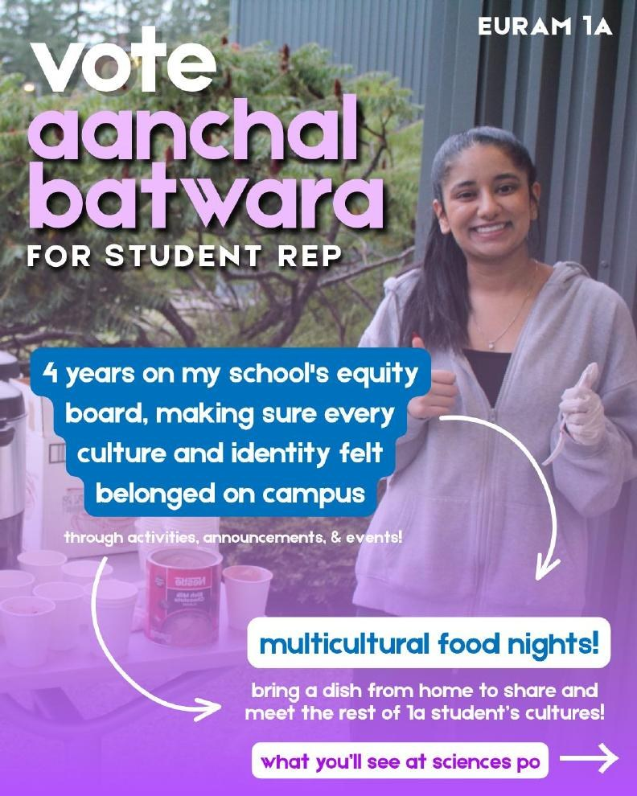
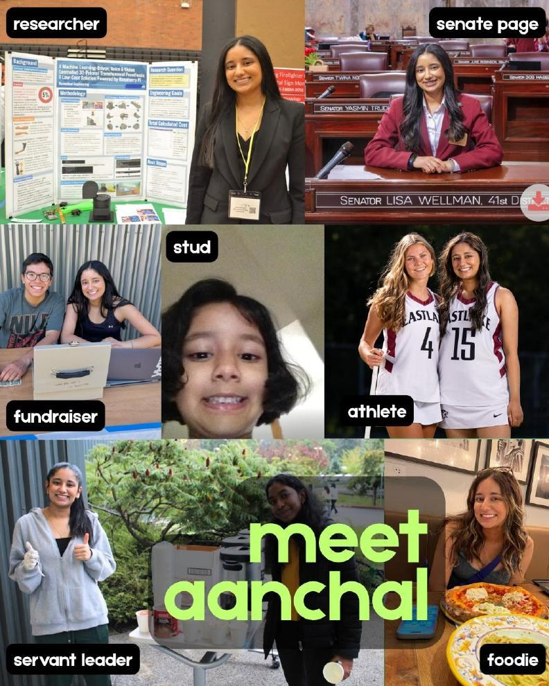

2026
No Precedent
Building Island County's first youth court, after a summer spent reading four years of juvenile case files — and what a diversion program still can't repair.
Politics and government at Sciences Po Reims, then business at University of California Berkeley Haas.
I'm a first-year in the University of California Berkeley × Sciences Po dual degree program, studying Economics and Law in Reims before moving to Berkeley's Haas School of Business in 2028.
I came to government from a STEM background, and engineering and AI are still what I read about for fun. I want to end up in tech policy, where the people writing the rules actually understand the systems they're regulating.
Building Island County's first youth court, after a summer spent reading four years of juvenile case files — and what a diversion program still can't repair.
A 1984 murder reopened forty years later by DNA methods that didn't exist when the evidence was collected, and how much of justice we leave to luck.
Sciences Po, Reims — elected to represent over 400 students to the administration on academics and student life.
Campaign graphics, event branding, and social media for student government, the AWSL Advocacy Summit, and class campaigns at Sciences Po.


Best reached by email. Happy to hear from anyone working on similar things.